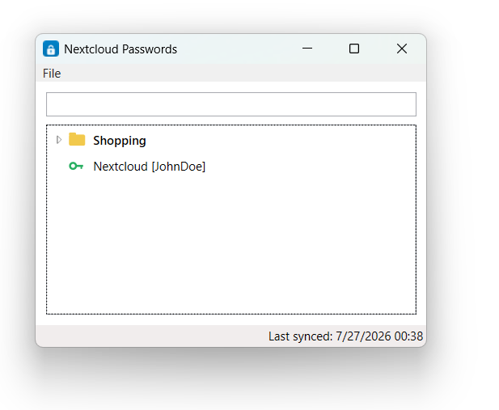

Your passwords,
without the browser.
NcPasswords is a small Windows app for the vault you already keep in Nextcloud. Sign in once, then look up, search and copy your logins straight from the desktop — and everything it stores stays encrypted on your own PC.

Your secrets never leave this PC unencrypted.
Encrypted at rest
Your Nextcloud login is protected the moment you sign in, using Windows' own per-user encryption (DPAPI) — readable only by your Windows account, on this PC.
Works offline
Your passwords are cached the same way, locally, so NcPasswords keeps working without a connection — and never hands your vault to anyone else.
Talks only to your server
No analytics, no relay, no other backend. NcPasswords only ever calls the Nextcloud server address you give it.
Everything you need, nothing you don't.
NcPasswords keeps its interface as small as the job it does — one combined tree for browsing, one shortcut for copying, and the rest tucked out of sight until you ask for it.
- One combined tree Folders and entries live together, in the classic layout made popular by Password Safe — expand what you need, ignore the rest.
- Just a name and a username Entries show only what helps you pick the right one. Notes, URLs, custom fields and tags stay one click away, in the details view.
- Copy without touching the mouse twice Double-click an entry to copy its password, or press Ctrl+C to copy its username. Either way, your clipboard clears itself after 30 seconds.
- Search as you type Filters instantly across name, username, URL and notes — folders collapse down to just the matches.
- Lives in the tray Closing the window doesn't quit the app — it's ready the moment you need the next password.
Installed in under a minute.
Download the installer
One file, below — no account or sign-up needed to grab it.
Run it
Installs just for your Windows account, so no administrator rights are required.
Sign in
Enter your Nextcloud server address, username and password — use an app password if you have two-factor authentication on.